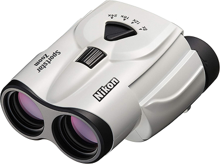

부가서비스 안내
극장 내 편의시설과 관람을 더 풍성하게 만들어줄
대여 서비스를 안내합니다.
층별 편의시설
- 4F
- 커튼콜 인 샬롯 · 엔제리너스
- 3F
- 샤롯데룸 · 엔제리너스
- 2F
- 호텔 연결 브릿지
- 1F
- MD SHOP · 서비스존 · 물품보관소 · 엔제리너스
알아두면 좋은 시설
- 서비스존1층 로비
- 티켓 수령, 배송 신청, 각종 문의를 접수하는 고객 서비스 공간입니다.
- 샤롯데룸3층 객석 뒤
- 몸이 불편하시거나 어린이를 동반한 관객을 위한 편안한 관람 공간입니다.
- 커튼콜 인 샬롯4층
- 국내 최초 뮤지컬 펍 '커튼콜'과 함께한 컬래버레이션 공간입니다.
오페라글라스 대여
더 크게, 더 생생하게! 배우들의 표정과 생동감 있는 무대를 더욱 가까이 즐길 수 있는 방법 - 오페라글라스와 함께 소중한 순간을 더 특별하게 만들어보세요.

- 10배율
- 초경량 92g
- 미끄럼방지 그립
- 제품명
- 니콘 스포츠스타 EX
- 배율
- 10배율
- 대여가격
- 5,500원
이용 방법
- 1극장 1층 오페라글라스 창구에서 예매자 개인정보(성함, 연락처) 확인 및 대여자 신분증 맡긴 후 수령
- 공연 시작 2시간 전부터 10분 전까지 수령 가능
- 2사용 완료 후 오페라글라스 반납 및 신분증 수령
- 대여 창구와 동일, 공연 종료 후 15분까지 반납 (초과 시 추가 대여료 발생)
- 공연 시작 2시간 전까지 온라인 사전 예약이 가능하며, 예약 마감 후 잔여 수량에 한해 현장 대여가 가능합니다.
- 대여자 본인의 신분증을 반드시 지참해 주세요. 공연 관람 당일 상품의 변경·취소는 불가합니다.
자막안경 대여
- ACCESSIBILITY SERVICE모두를 위한 공연 관람 문화,
'아울' 자막안경 - 대사가 아득히 멀게 느껴졌던 순간을, 이제 자막안경을 사용해 무대를 한눈에 파악해보세요. 청각이 약하거나 언어가 다른 관객도 대사와 상황을 더 편안하게 따라갈 수 있는 서비스입니다.
- 01실시간 자막
대사와 노래 가사를 안경 렌즈에 실시간으로 표시합니다.
- 02내 자리에서 그대로
무대 시선을 놓치지 않고 자막을 함께 확인할 수 있습니다.
- 03별도 앱 설치 불필요
현장에서 안내원에게 요청하면 바로 대여해 드립니다.
이용 방법
- 11층 서비스존에서 대여 신청 및 신분증 제출 후 자막안경 수령
- 공연 시작 30분 전까지 신청 가능
- 2공연 종료 후 대여 받은 서비스존에 반납
- 파손·분실 시 변상 규정이 적용될 수 있습니다.